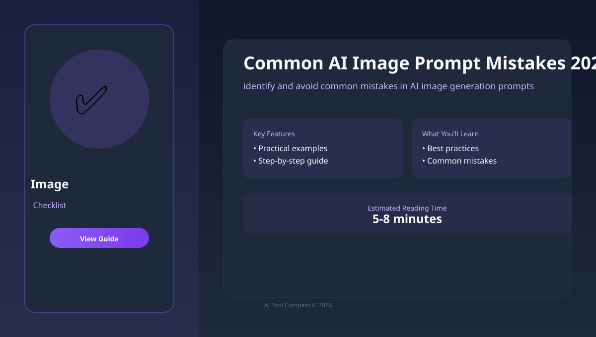

Checklist
Signal from 2026-06-22
Common AI Image Prompt Mistakes 2026
Avoid common pitfalls in AI image generation prompts.
Disclosure: this page is independent editorial content. If affiliate links are added later, they should be clearly labeled beside the relevant recommendation.

At a glance
Avoid common pitfalls in AI image generation prompts.
The practical question is what this changes for identify and avoid common mistakes in AI image generation prompts once the headline is translated into a real workflow or buying decision.
Review your prompts against common error patterns.
- What actually changed here beyond the product headline or research framing?
- If this affects my workflow, is the main impact capability, pricing, or operational risk?
- What evidence would I want before turning this signal into a purchase, build, or content decision?
Source snapshot
Avoid common pitfalls in AI image generation prompts.
This page starts from a source-backed signal and then expands it into an original English explainer. The goal is not to mirror the original wording, but to help a reader understand why the development matters, what to verify next, and where the practical opportunity or risk sits.
The original source signal was reviewed, then rewritten into an original English article structure with clear context, human review, and practical next-step checks.
Beginner summary
If you are new to ai image generation, start by naming the job in plain language. Do you need a draft, comparison, summary, image, video, transcript, code change, or repeatable business process? The tool only becomes useful after the task is clear.
For this topic, the core goal is to identify and avoid common mistakes in AI image generation prompts. A beginner should not start with every advanced feature. Start with one real example, compare the output against a requirement, and keep a small note of what worked so the workflow becomes repeatable.
Because this is a checklist page, the goal is to prevent predictable mistakes before they become expensive. A good checklist is short enough to use during work and specific enough to catch real failure points. The best first win is not a perfect result; it is a repeatable process you can check.
If you discovered this topic through a fast-moving AI digest, slow down before drawing conclusions. Read the signal, identify what changed, and decide whether the change affects product choice, workflow design, pricing risk, or content strategy for your own work.
Community-inspired field note
Community-inspired field note: Visual AI discussions often come back to prompt structure: subject, composition, style, lighting, constraints, and edit notes. The practical lesson is to treat the prompt as an art direction brief, not a bag of attractive adjectives.
This page uses that lesson as source inspiration only. It does not copy forum images or long passages. The translated idea is turned into an original English tutorial structure: clarify the job, create a small spec, generate in sections, and keep human review in the loop.
Who this is for
This guide is for creators, students, freelancers, small business owners, and knowledge workers who want a practical checklist without needing technical background. It is also useful if you have tried Prompt Engineering or Common Mistakes once, got a mixed result, and want a calmer process.
- You want plain-English steps instead of buzzwords.
- You need to understand when Prompt Engineering is enough and when another tool may fit better.
- You care about output quality, cost control, and avoiding common beginner mistakes.
- You want article-ready examples that can be reused in real work.
Step-by-step workflow
- Write the outcome. Describe the final result in one sentence: "I need to identify and avoid common mistakes in AI image generation prompts for a beginner audience." This prevents the tool from guessing the job.
- Collect context. Gather notes, examples, links, screenshots, constraints, and facts that cannot change. For coding or research tasks, include exact files or source URLs.
- Run a clarification pass. Ask Prompt Engineering to list missing information and assumptions before producing the final output. This mirrors a /ask style workflow without needing a special tool.
- Create a small spec. Turn the clarified answer into a short spec: audience, input, output format, quality bar, risks, and review checklist. For coding, this can live in CLAUDE.md or a task note.
- Generate one section. Ask for one section, one image concept, one code function, one table, or one clip at a time. Smaller output is easier to check and revise.
- Review like an editor. Check accuracy, clarity, rights, privacy, tone, and whether the result actually solves the reader's task. Do not outsource judgment to the model.
- Save the reusable pattern. Keep the prompt, the accepted output, and the final edits. Over time this becomes a small personal style brief playbook.
Why this workflow works
Image generation becomes easier when you separate concept, layout, and style. Start with a rough purpose for the image, decide where the viewer should look first, then add only the style details that support that purpose. Too many style tags make images less controllable.
For a blog illustration, write the caption first. If the image needs to explain a workflow, request a diagram-like composition rather than a decorative scene. Generate a few options, choose the clearest one, then edit or regenerate only the weak part.
The key detail is to keep decisions visible. Write down why you chose Prompt Engineering over Common Mistakes, what you asked it to do, and which checks passed. This creates original editorial value for a website because readers can see the reasoning, not just the final recommendation.
Tool comparison
The table below is not a permanent ranking. AI products change quickly, so treat it as a selection framework. The practical question is not "which tool is famous?" but "which tool gives the clearest result for this exact job?"
| Tool | Best beginner use | How to test it |
|---|---|---|
| Prompt Engineering | Best when you need a flexible starting point for prompt design, thumbnails, product concepts, illustrations, and brand visuals. | Use it for planning, first drafts, and review questions; verify any current details. |
| Common Mistakes | Best when the interface or workflow matches the specific job more closely. | Test it with the same brief you gave Prompt Engineering, then compare output quality and time saved. |
| Best Practices | Best as a second opinion or specialist option after the basic style brief test. | Keep it only if it solves a repeated problem better than your current tool. |
Mini case study
Assume you are building a small English guide site and this page is one article in the cluster. The weak version says: "Here are some AI tools." The stronger version gives a real workflow, a decision table, a reusable prompt, and a warning box that tells beginners where they are likely to fail.
For Common AI Image Prompt Mistakes 2026, the article should answer one practical reader question: "How do I identify and avoid common mistakes in AI image generation prompts without wasting time or trusting output blindly?" Every section should serve that question. If a paragraph does not help the reader decide, perform, verify, or avoid a mistake, cut it or rewrite it.
When monetization is added later, keep the ad unit outside the explanation flow. A display ad can sit between major sections, but it should not interrupt the checklist or make an affiliate link look like an editorial verdict. Helpful structure is what makes the page eligible for long-term traffic.
Example prompt or brief
Copy this structure and replace the bracketed details with your own. It works because it gives the AI a role, a task, constraints, and a checking standard.
Act as a practical image assistant.
Goal: help me identify and avoid common mistakes in AI image generation prompts.
Audience: beginner with no technical background.
Inputs: [paste notes, links, files, product details, or rough ideas].
Context method: use zero-shot thinking, then produce a short spec before the final answer.
Output format: step-by-step guide with a short summary, a comparison table, common mistakes, and a final checklist.
Quality bar: explain trade-offs clearly, flag uncertain claims, avoid hype, and tell me what a human should verify.Common mistakes
Mistake 1
Stacking many style references until the image has no clear purpose. Fix it by asking for missing requirements and a short plan before output.
Mistake 2
Using visuals that look attractive but do not explain the article. Fix it by checking claims, links, calculations, rights, and anything that affects a real decision.
Mistake 3
Ignoring commercial-use terms, brand assets, or recognizable people. Fix it by saving the accepted prompt, final output, and your human edits.
- Using a vague request. "Make this better" gives the tool too much room. Explain what better means.
- Skipping source checks. For facts, prices, policies, or current product features, verify with official pages before publishing.
- Buying too early. Test the free tier or trial with your real task before committing to a paid plan.
- Ignoring rights and privacy. Do not upload private customer data, confidential documents, or media you do not have permission to use.
- Publishing generic output. Add your examples, screenshots, judgment, and final edits so the page has original value.
Quality bar before publishing
Write the image purpose first, then generate a composition that teaches one idea. This is the minimum bar for a page that aims to win search traffic and qualify for monetization later. Search engines and ad networks both reward pages that provide clear value, not pages that merely repeat tool names.
| Check | Pass condition | Beginner action |
|---|---|---|
| Usefulness | The reader can complete one task after reading. | Add a concrete example, prompt, or checklist. |
| Originality | The page adds judgment, structure, or field notes. | Include your own test result or decision rule. |
| Trust | Claims are either verified or clearly marked as uncertain. | Check current facts against official pages before updating. |
| Monetization | Ads and affiliate links are disclosed and separated from advice. | Keep recommendations useful even without commissions. |
Final checklist
- The task is written in one clear sentence.
- The prompt includes audience, constraints, and output format.
- Important facts and claims have been checked against reliable sources.
- The output has been edited by a human for clarity and usefulness.
- Any affiliate or sponsored recommendation is clearly disclosed near the link.
- The workflow includes a saved prompt pattern, a review rule, and a next-step note.
Continue with the next highest-value page.
Use the routes below to keep momentum. The best traffic clusters do not trap readers on one article; they hand them to the next decision, workflow, or validation step with intent.
Best AI Image Generators: Beginner Comparison
Use the broadest ai image generation guide first if you want the fastest route from curiosity into a real decision.
Open starting guideAI Thumbnail Workflow for YouTube and Blogs
Move from research into execution with a step-by-step pattern that turns identify and avoid common mistakes in AI image generation prompts into a repeatable process.
Open workflowAI Image Style Prompts: Practical Examples
Tighten the output with a prompt library, checklist, or template before you publish, ship, or share the result.
Open checklistAI Image Generation category hub
Scan the full ai image generation cluster to find narrower tutorials, comparisons, and supporting pages in one place.
Open category pageAI Skills & Prompt Playbooks
Pull a reusable prompt, review checklist, or workflow note into your next session before generating more output.
Open playbooksAI Sites directory
Compare pricing, positioning, and upgrade triggers before committing to a paid plan.
Open AI sitesKeep the research thread alive.
Do not rely on memory. Save the guide, keep the broader site bookmarked, and let the browser hold your strongest pages so the next session starts with signal instead of friction.
Keep the article in your shortlist.
Use the same save action you see in the hero so the guide stays available while you compare tools, briefs, and workflows.
Return to the wider editorial stack.
Bookmark the whole site and keep the feed URL nearby so you can jump back into directories, comparisons, and new posts without restarting research.
Articles you marked for later.
The browser keeps a lightweight shortlist so you can return to the strongest pages after you finish comparing vendors or drafting prompts.
Pages you visited most recently.
Recent reading history helps you resume the thread instead of reopening random tabs and losing the route across the cluster.
FAQ
What is the easiest way to start?
Start with one real task you already need to finish. A small real example teaches more than testing random prompts.
Do I need paid AI tools?
Not at first. Paid plans are worth considering only when limits, quality, or collaboration features block repeated work.
Can I trust the output immediately?
No. Treat AI output as a draft or assistant result. Check facts, links, calculations, visual details, and any claim that could affect a decision.
Why include community-inspired field notes?
They turn broad tool advice into practical working habits. The goal is not to copy a forum post, but to translate useful patterns into original English guidance that helps a beginner avoid predictable mistakes.